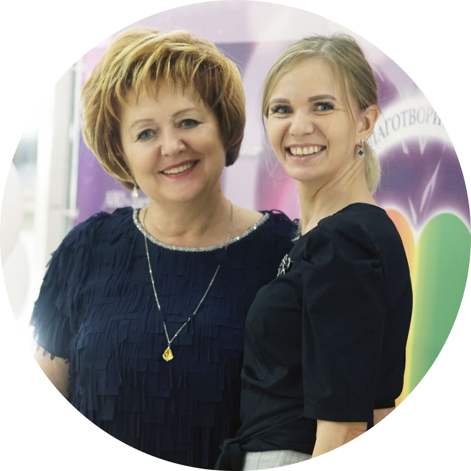
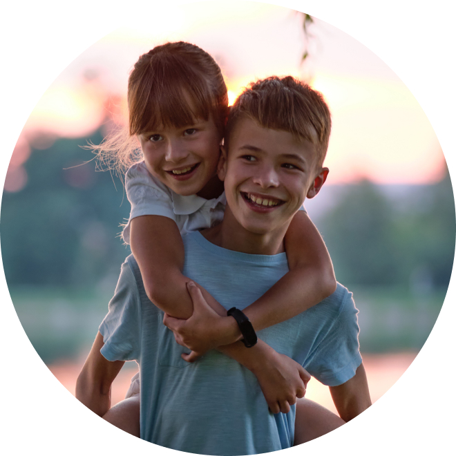
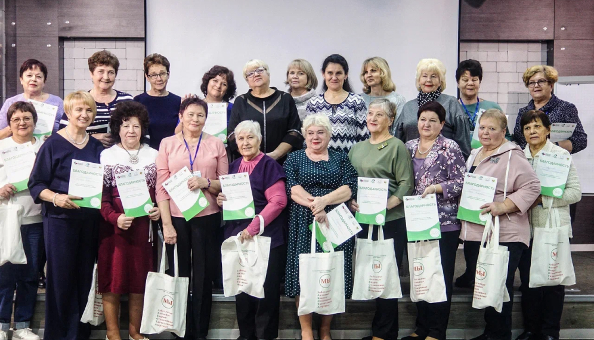
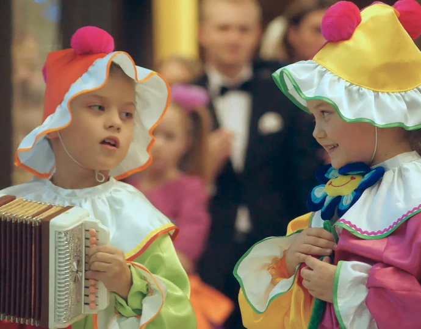

Забота это:
Социальная помощь нуждающимся
Благотворительность
Образовательные программы для всех возрастов
Добровольчество
Ресурсная поддержка НКО

Дети и подростки
Молодёжь
Пожилые
Инвалиды
Специалисты НКО
Благотворительной деятельностью организации ежегодно охватывается более 5 тыс. человек
Наша миссия
Cодействие становлению гражданского общества конкретной деятельностью, направленной на улучшение качества жизни социально-незащищенных категорий населения.
Задача
Объединение усилий людей, стремящихся внести свой вклад в развитие системы помощи инвалидам, пенсионерам, несовершеннолетним. Сохранение духовных ценностей, национальных традиций.
27 лет
Нашей организации
Более 100
Реализовано проектов
Более 5000
Волонтеров


Главное в этом месяце
@@include("_item-news.html", {"nmb":"1","tag":"Робофутбол для особых детей","txt":"«Зимний хакатон» - играют роботы и дети"})
@@include("_item-news.html", {"nmb":"2","tag":"Серебряный круг","txt":"Региональный конкурс «Серебряный наставник» открывает двери для старшего поколения"})
@@include("_item-news.html", {"nmb":"3","tag":"И стар, и млад - в добровольческий отряд!","txt":"«Зимний хакатон» - играют роботы и дети"})
@@include("_item-news.html", {"nmb":"1","tag":"Робофутбол для особых детей","txt":"«Зимний хакатон» - играют роботы и дети"})
@@include("_item-news.html", {"nmb":"2","tag":"Серебряный круг","txt":"Региональный конкурс «Серебряный наставник» открывает двери для старшего поколения"})
@@include("_item-news.html", {"nmb":"3","tag":"И стар, и млад - в добровольческий отряд!","txt":"«Зимний хакатон» - играют роботы и дети"})
Все новости